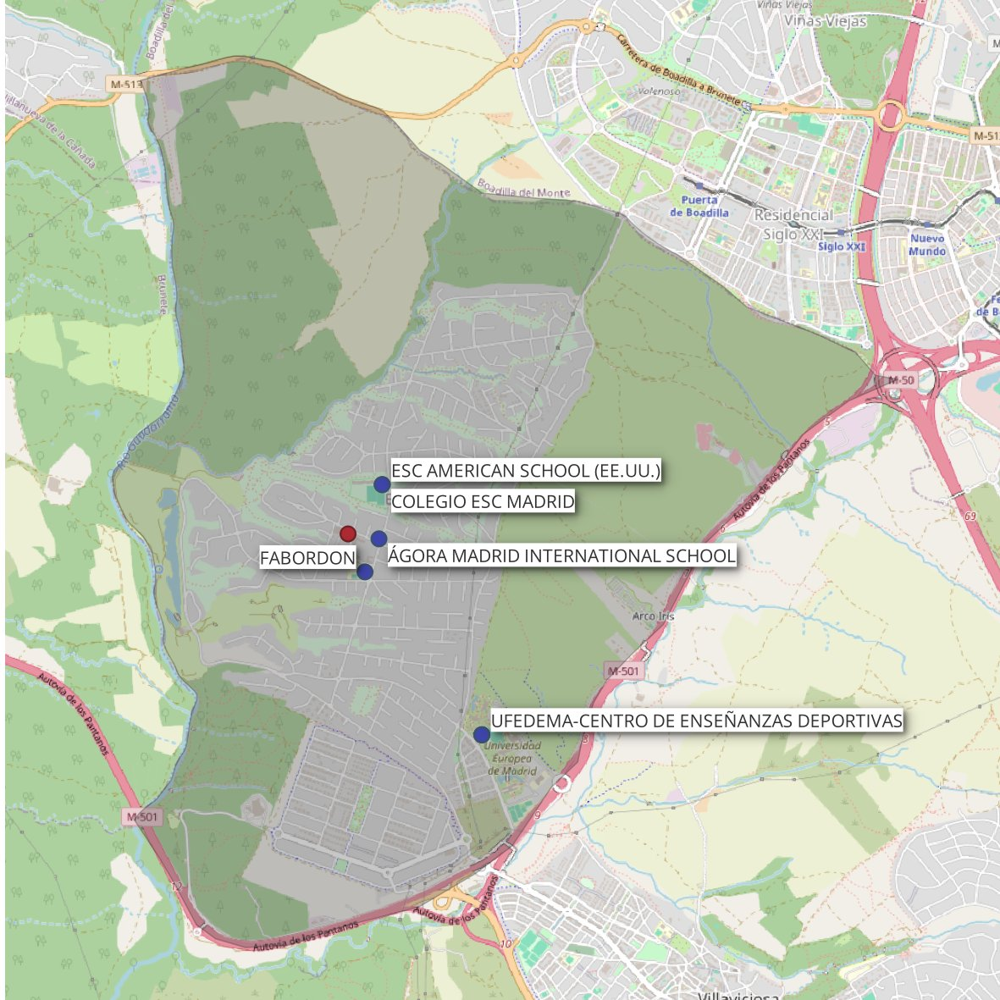

Puntos de interés en el territorio parroquial
Parroquia Santísima Trinidad (Villaviciosa de Odón) · Arciprestazgo de Villaviciosa de Odón
Entidades religiosas no católicas
No hay ninguna entidad religiosa no católica en el territorio de esta parroquia.
Centros educativos

7 centros educativos en el territorio de la parroquia (privado: 7).
| Centro | Tipo | Titularidad | Domicilio | Web |
|---|---|---|---|---|
| ÁGORA MADRID INTERNATIONAL SCHOOL | Centro privado de educación infantil, primaria y secundaria | Privado | Calle Duero, 35, 28670 Villaviciosa de Odón | Página web |
| CENTRO DE FORMACIÓN PROFESIONAL EUROPEO DE MADRID - ESTUDIOS PROFESIONALES SUPERIORES | Centro privado de formación profesional específica | Privado | Calle Tajo, s/n, 28670 Villaviciosa de Odón | |
| CENTRO PROFESIONAL EUROPEO DE MADRID - ESTUDIOS PROFESIONALES DE ENSEÑANZAS ARTISTICAS | Centro autorizado de artes plásticas y diseño | Privado | Calle Tajo, s/n, 28670 Villaviciosa de Odón | |
| COLEGIO ESC MADRID | Centro privado de educación secundaria | Privado | Calle Duero, 47, 28670 Villaviciosa de Odón | |
| ESC AMERICAN SCHOOL (EE.UU.) | Centro docente extranjero en España | Privado | Calle Duero, 47, 28670 Villaviciosa de Odón | Página web |
| FABORDON | Centro autorizado elemental de música | Privado | Calle Duero, 35, 28670 Villaviciosa de Odón | |
| UFEDEMA-CENTRO DE ENSEÑANZAS DEPORTIVAS | Centro autorizado de enseñanzas deportivas grado medio y superior | Privado | Calle Tajo, s/n, 28670 Villaviciosa de Odón | Página web |
Fuente: registro de centros educativos de la Comunidad de Madrid. Solo se recogen los centros en situación de alta.